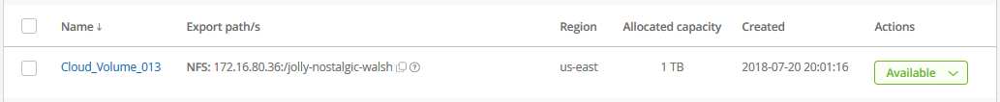

릴리스 정보
릴리스 정보
클라우드 볼륨을 생성하는 중입니다
 변경 제안
변경 제안
NetApp Cloud Orchestrator 사이트에서 클라우드 볼륨을 생성할 수 있습니다.
필수 구성 요소
첫 번째 클라우드 볼륨을 생성하려면 AWS 환경이 특정 요구사항을 충족해야 합니다. 클라우드 볼륨을 구축하려는 각 AWS 지역의 경우 다음과 같은 항목이 있어야 합니다.
-
VPC(가상 프라이빗 클라우드)
-
VPC에 연결된 vGW(Virtual Private Gateway
-
VPC용 서브넷
-
클라우드 볼륨이 실행될 네트워크를 포함하여 정의된 경로
-
선택적으로 Direct Connect Gateway를 사용할 수 있습니다
특정 지역에서 첫 번째 클라우드 볼륨을 생성할 때 다음 정보를 사용할 수 있어야 합니다.
-
* AWS 계정 ID *: 대시가 없는 12자리 아마존 계정 식별자입니다.
-
* CIDR(Classless Inter-Domain Routing) 블록 *: 사용되지 않는 IPv4 CIDR 블록. 네트워크 접두사는 /16 및 /28 사이의 범위여야 하며, 개인 네트워크용으로 예약된 범위(RFC 1918)에도 속해야 합니다. VPC CIDR 할당과 중복되는 네트워크를 선택하지 마십시오.
-
서비스를 사용할 올바른 지역을 선택해야 합니다. 을 참조하십시오 "지역 선택".
필요한 AWS 네트워킹 구성 요소를 구성하지 않은 경우 를 참조하십시오 "NetApp Cloud Volumes Service for AWS 계정 설정" 참조하십시오.
-
참고: * SMB 볼륨 생성을 계획하는 경우 연결할 수 있는 Windows Active Directory 서버가 있어야 합니다. 볼륨을 생성할 때 이 정보를 입력합니다. 또한 관리자 사용자가 지정된 OU(조직 단위) 경로에 컴퓨터 계정을 만들 수 있는지 확인합니다.
볼륨 세부 정보를 입력합니다
볼륨 생성 페이지 맨 위에 있는 필드를 작성하여 볼륨 이름, 크기, 서비스 수준 등을 정의합니다.
-
에 로그인한 후 "NetApp Cloud Orchestrator를 사용하면" 구독 중에 제공한 전자 메일 주소가 있는 사이트입니다 "영역을 선택했습니다"에서 * 새 볼륨 생성 * 버튼을 클릭합니다.

-
볼륨 생성 페이지에서 생성할 볼륨의 프로토콜로 * NFS *, * SMB * 또는 * 이중 프로토콜 * 을 선택합니다.
-
이름 * 필드에서 볼륨에 사용할 이름을 지정합니다.
-
Region * (지역 *) 필드에서 볼륨을 생성할 AWS 영역을 선택합니다. 이 지역은 AWS에서 구성한 지역과 일치해야 합니다.
-
시간대 * 필드에서 시간대를 선택합니다.
-
볼륨 경로 * 필드에서 사용하려는 경로를 지정하거나 자동으로 생성된 경로를 적용합니다.
-
Service level * (서비스 수준 *) 필드에서 볼륨에 대한 성능 수준을 * Standard * (표준 *), * Premium * (프리미엄 *) 또는 * Extreme * (익스트림 *)으로 선택합니다.
을 참조하십시오 "서비스 레벨 선택" 를 참조하십시오.
-
할당된 용량 * 필드에서 필요한 용량을 선택합니다. 사용 가능한 inode 수는 할당된 용량에 따라 다릅니다.
을 참조하십시오 "할당된 용량을 선택합니다" 를 참조하십시오.
-
NFS 버전 * 필드에서 요구사항에 따라 * NFSv3 *, * NFSv4.1 * 또는 * 둘 다를 선택합니다.
-
이중 프로토콜을 선택한 경우 드롭다운 메뉴에서 * NTFS * 또는 * UNIX * 를 선택하여 * 보안 스타일 * 필드에서 보안 스타일을 선택할 수 있습니다.
보안 스타일은 사용된 파일 권한 유형과 사용 권한을 수정하는 방법에 영향을 줍니다.
-
UNIX는 NFSv3 모드 비트를 사용하며, NFS 클라이언트만 권한을 수정할 수 있습니다.
-
NTFS는 NTFS ACL을 사용하며, SMB 클라이언트만 권한을 수정할 수 있습니다.
-
-
Show snapshot directory * (스냅샷 디렉토리 표시 *) 필드에서 이 볼륨의 스냅샷 디렉토리를 볼 수 있는 기본값을 유지하거나 스냅샷 복사본 목록을 숨기려면 이 상자의 선택을 취소합니다.
네트워크 세부 정보 입력(AWS 지역당 1회 설정)
이 AWS 지역에서 클라우드 볼륨을 처음 생성하는 경우 * Network * 섹션이 표시되어 Cloud Volumes 계정을 AWS 계정에 연결할 수 있습니다.
-
CIDR(IPv4) * 필드에 지역에 대해 원하는 IPv4 범위를 입력합니다. 네트워크 접두사의 범위는 /16과 /28 사이여야 합니다. 또한 네트워크는 전용 네트워크용으로 예약된 범위 내에 속해야 합니다(RFC 1918). VPC CIDR 할당과 중복되는 네트워크를 선택하지 마십시오.
-
AWS 계정 ID * 필드에 대시 없이 12자리 아마존 계정 식별자를 입력합니다.

엑스포트 정책 규칙 입력(선택 사항)
NFS 또는 이중 프로토콜을 선택한 경우 * Export policy * 섹션에서 내보내기 정책을 생성하여 볼륨에 액세스할 수 있는 클라이언트를 식별할 수 있습니다.
-
허용된 클라이언트 * 필드에서 IP 주소 또는 CIDR(Classless Inter-Domain Routing)을 사용하여 허용된 클라이언트를 지정합니다.
-
Access * 필드에서 * Read & Write * 또는 * Read Only * 를 선택합니다.
-
프로토콜 * 필드에서 사용자 액세스에 사용되는 프로토콜(또는 볼륨에서 NFSv3과 NFSv4.1 액세스가 모두 허용되는 경우 프로토콜)을 선택합니다.

추가 엑스포트 정책 규칙을 정의하려면 * + 엑스포트 정책 규칙 추가 * 를 클릭합니다.
데이터 암호화 활성화(선택 사항)
-
SMB 또는 이중 프로토콜을 선택한 경우 * SMB3 프로토콜 암호화 활성화 * 필드의 확인란을 선택하여 SMB 세션 암호화를 활성화할 수 있습니다.
-
참고: * SMB 2.1 클라이언트가 볼륨을 마운트해야 하는 경우 암호화를 활성화하지 마십시오.
-
Active Directory 서버(SMB 및 이중 프로토콜)와 볼륨 통합
SMB 또는 이중 프로토콜을 선택한 경우 * Active Directory * 섹션에서 Windows Active Directory 서버 또는 AWS Managed Microsoft AD와 볼륨을 통합하도록 선택할 수 있습니다.
사용 가능한 설정 * 필드에서 기존 Active Directory 서버를 선택하거나 새 AD 서버를 추가합니다.
새 AD 서버에 대한 연결을 구성하려면 다음을 수행합니다.
-
DNS server * 필드에 DNS 서버의 IP 주소를 입력합니다. 여러 서버를 참조할 때 쉼표를 사용하여 IP 주소를 구분합니다(예: 172.31.25.223, 172.31.2.74).
-
도메인 * 필드에 SMB 공유의 도메인을 입력합니다.
AWS Managed Microsoft AD를 사용하는 경우 "Directory DNS name(디렉터리 DNS 이름)" 필드의 값을 사용합니다.
-
SMB 서버 NetBIOS* 필드에 생성할 SMB 서버의 NetBIOS 이름을 입력합니다.
-
조직 단위 * 필드에 자신의 Windows Active Directory 서버에 연결할 "CN=Computers"를 입력합니다.
AWS Managed Microsoft AD를 사용하는 경우 조직 단위는 "OU=<NetBIOS_name>" 형식으로 입력해야 합니다. 예: * OU=AWSmanagedAD *.
중첩된 OU를 사용하려면 가장 낮은 수준의 OU를 가장 높은 수준의 OU까지 먼저 호출해야 합니다. 예: * OU=THIRDLEVEL, OU=SECONDLEVEL, OU=FIRSTLEVEL *.
-
사용자 이름 * 필드에 Active Directory 서버의 사용자 이름을 입력합니다.
SMB 서버에 연결할 Active Directory 도메인에서 컴퓨터 계정을 생성할 수 있도록 승인된 모든 사용자 이름을 사용할 수 있습니다.
-
암호 * 필드에 지정한 AD 사용자 이름의 암호를 입력합니다.

을 참조하십시오 "Active Directory 도메인 서비스를 위한 사이트 토폴로지 설계" 최적의 Microsoft AD 구현 설계 지침
를 참조하십시오 "NetApp Cloud Volumes Service for AWS로 AWS 디렉토리 서비스 설정" AWS Managed Microsoft AD 사용에 대한 자세한 지침은 가이드를 참조하십시오.

AWS 보안 그룹 설정에 대한 지침에 따라 클라우드 볼륨이 Windows Active Directory 서버와 올바르게 통합되도록 해야 합니다. 을 참조하십시오 "Windows AD 서버에 대한 AWS 보안 그룹 설정" 를 참조하십시오. -
참고: * NFS를 사용하여 볼륨을 마운트하는 UNIX 사용자는 UNIX 루트의 경우 Windows 사용자 "루트"로, 다른 모든 사용자의 경우 "pcuser"로 인증됩니다. NFS를 사용할 때 이중 프로토콜 볼륨을 마운트하기 전에 이러한 사용자 계정이 Active Directory에 있는지 확인하십시오.
-
스냅샷 정책 생성(선택 사항)
이 볼륨에 대한 스냅샷 정책을 생성하려면 * 스냅샷 정책 * 섹션에 세부 정보를 입력합니다.
-
스냅샷 빈도 * 시간별 *, * 일별 *, * 주별 * 또는 * 월별 * 를 선택합니다.
-
유지할 스냅샷 수를 선택합니다.
-
스냅샷을 생성할 시간을 선택합니다.

위의 단계를 반복하거나 왼쪽 탐색 영역에서 스냅샷 탭을 선택하여 추가 스냅샷 정책을 생성할 수 있습니다.
볼륨을 생성합니다
-
페이지 아래쪽으로 스크롤하여 * 볼륨 생성 * 을 클릭합니다.
이 영역에서 이전에 클라우드 볼륨을 생성한 경우 새 볼륨이 볼륨 페이지에 나타납니다.
이 AWS 지역에서 생성한 첫 번째 클라우드 볼륨이고 이 페이지의 네트워크 섹션에 네트워킹 정보를 입력한 경우, AWS 인터페이스와 볼륨을 연결하기 위해 수행해야 하는 다음 단계를 식별하는 진행률 대화 상자가 표시됩니다.

-
의 섹션 6.4에 설명된 대로 가상 인터페이스를 수락합니다 "NetApp Cloud Volumes Service for AWS 계정 설정" 가이드. 10분 이내에 이 작업을 수행해야 합니다. 그렇지 않을 경우 시스템이 시간 초과될 수 있습니다.
인터페이스가 10분 이내에 나타나지 않으면 구성 문제가 있을 수 있으며, 이 경우 지원 부서에 문의해야 합니다.
인터페이스 및 기타 네트워킹 구성 요소가 생성되면 생성한 볼륨이 Volumes 페이지에 나타나고 Actions 필드가 Available로 나열됩니다.
를 계속 진행합니다 "클라우드 볼륨 마운트".